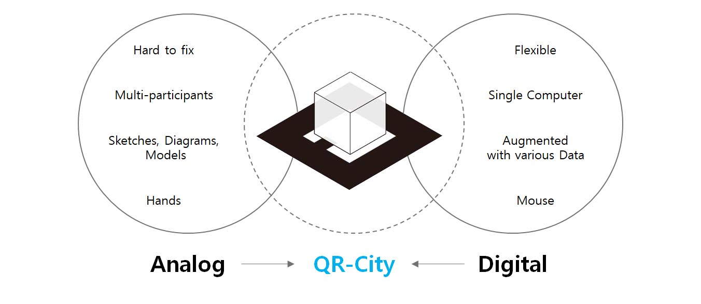

QR City
Design Tool using Augmented Reality
Final Project at SKKU Design Modeling Class(Spring Semester, 2013)
Han Seung Gyun, Jung Tae Jung, Jae Jun Hyung and Bang Jun Gyu
Objective
In this project, we wanted to make urban design tool that gives designer not only digital experience, but also analogue(sense of touch, tactile) experience.
In design process, we do not communicate with each other through the mouse. People usually communicate with moving, turning, and tearing things with a pencil, pen, and hand. It is very inspiring way.
On the other hand, for urban design (or large-scale buildings), it is essential to understand contact as well as appearance. Sometimes the physical, social and economic contexts determine most of the design of the site and buildings.
What we wanted to create was a digital tool that could show the various contexts of cities and a platform in which many participants could evolve esign by doing things with their hands. Using AR technology, User checks entire shape and context of urban environment in digital display, and modifies by moving and changing QR markers
Process
Programming Language : Processing
QR City is simple program that detects QR markers in given image and creates buildings according to makers' position and pattern. Programming code was written in Processing, and we used OpenGL, NYAR4PSG, and GSvideo processing libraries
We set every marker(1-100) has its own building information(usage, height, and etc.). Different color(red, yellow and etc.) means different usage.

The program detects the markers on the webcam and displays the unique building by calculation. Users can erase QR-markers and background when they finish.

Possibility
We thought that ‘QR City’ could be developed as sustainable urban design tool, if there were any related data to use. For example, it could be developed for 'zero energy neighborhood' design tool with information about energy consumption of buildings and amount of sunshine.
If we use data such as water, waste, and traffic, program can be developed as powerful tool for designing sustainable urban environment.